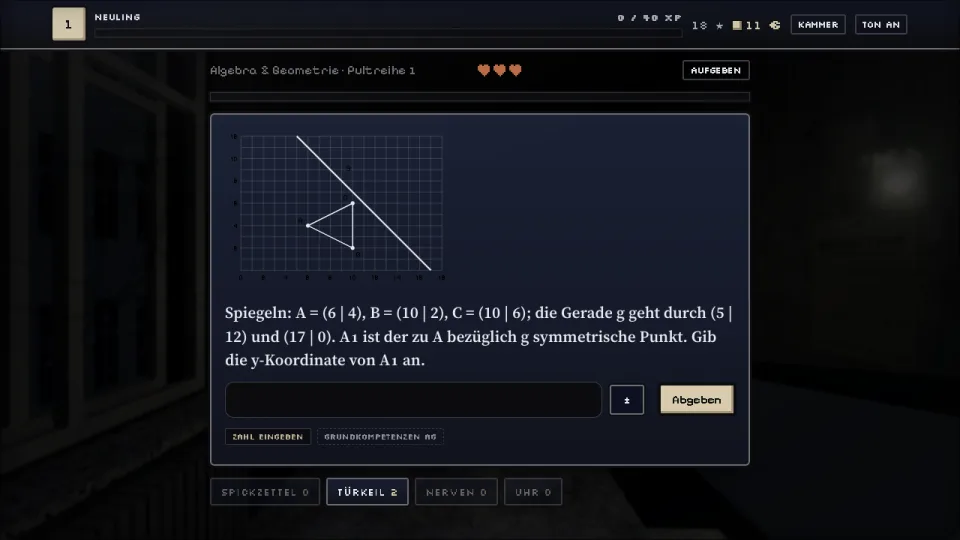
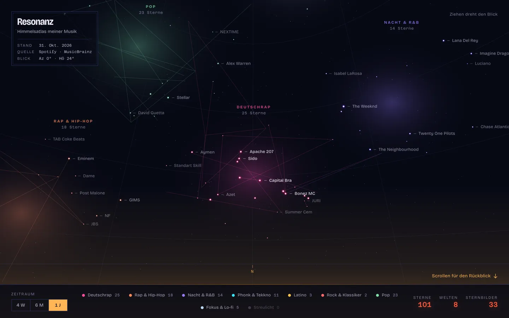

SP-17 Stefan Paun
Ich baue KI-Agents und lerne Cybersecurity.
17 · Schüler in Wien · Matura 2027
- 01Agent-Board
- 11Resonanz
- 02Jarvis
- 10Stapelwerk
- 03Claude-Code-Werkzeuge
- 09Nachtschule
- 04Nachsitzen
- 08Ungelöst
- 05Security
- 06Prüfstand
- 07Schleuse
Alle Projekte.
Elf Projekte, eins pro Pin. Ausführlich zeige ich drei: Agent-Board für KI-Agents, Schleuse für Security und Nachtschule für Lernspiele.
Mein Anteil: Die Ideen und alle Entscheidungen kommen von mir: was gebaut wird, wie es funktionieren soll und was so bleibt. Den Code schreibt Claude Code nach meinen Vorgaben.
| Pin | Projekt | Art | Was es tut | Status | Link |
|---|---|---|---|---|---|
| 01 | Agent-Board | KI-Agents | zeigt live, welcher meiner Claude-Code-Agents gerade arbeitet | Open Source | Live-Demo (neuer Tab) |
| 02 | Jarvis | KI-Agents | Sprachassistent für Mac und Windows, über 4.400 Tests | privat | Aufbau |
| 03 | Claude-Code-Werkzeuge | KI-Agents | machen meinen KI-Assistenten verlässlicher, 6 Bausteine | teils Open Source | Wächter (neuer Tab) |
| 04 | Nachsitzen | KI-Agents | Werwolf-Spiel mit sechs Claude-Figuren, die sich erinnern | Open Source | Code (neuer Tab) |
| 05 | Security | Security | eigenes iPhone mit MVT gegen 6.630 Spyware-Indikatoren geprüft | Notiz | Vorgehen |
| 06 | Prüfstand | Security | prüft, ob mein KI-Agent versteckten Anweisungen folgt, 10 Angriffe | Open Source | Code (neuer Tab) |
| 07 | Schleuse | Security | stoppt vergiftete Pull Requests, 0 Fehlalarme in 31 echten PRs | Open Source | Code (neuer Tab) |
| 08 | Ungelöst | Open-Source-Hilfe | findet unbeantwortete Bug-Reports und Fragen aus 5 Quellen | Open Source | Code (neuer Tab) |
| 09 | Nachtschule | Lernspiele | 3D-Lernspiel für meine Matura, über 1.500 Fragen | privat | kein Wert |
| 10 | Stapelwerk | Lernspiele | Assembler-Lernspiel auf einer eigenen CPU, 30 Rätsel | Open Source | Spielen (neuer Tab) |
| 11 | Resonanz | Visualisierung | Spotify-Hörgewohnheiten als Sternenhimmel, 203 Künstler | Open Source | Himmel öffnen (neuer Tab) |
KI-Agents
Agent-Board
KI-Agent · öffentlich, Release v1.6.0
Eine Live-Ansicht in Pixel-Art für Claude-Code-Agents. Jeder Subagent ist eine kleine Figur, die in den Raum des Werkzeugs geht, das sie gerade benutzt. So sieht man auf einen Blick, wer arbeitet und wer auf eine Freigabe wartet.
| Kennwert | Wert | Einheit | Bedingungen |
|---|---|---|---|
| Automatische Tests | über300 | Tests | Testordner im Repo ansehen (Testordner, neuer Tab) |
| Laufzeit-Abhängigkeiten | 0 | Pakete | laut package.json (neuer Tab) |
| Oberfläche | 3 | Sprachen | Deutsch, Englisch, Spanisch |
| Release | v1.6.0 | Version | öffentlich seit , MIT-Lizenz |

Jarvis
KI-Agent · privat, täglich im Einsatz
Mein Sprachassistent für Mac und Windows: Taste drücken oder „Hey Jarvis“ sagen, er erledigt Aufgaben mit seinen Werkzeugen und antwortet mit Stimme. Daten verschlüsselt, Schlüssel im macOS-Schlüsselbund, über 4.400 automatische Tests. Der Code ist privat, weil persönliche Daten im Spiel sind.
Kennwerte
| Kennwert | Wert | Einheit | Bedingungen |
|---|---|---|---|
| Automatische Tests | über4.400 | Tests | Testläufe nachts in der Cloud |
| Läuft auf | 2 | Systeme | Mac und Windows |
| Auslösung | Taste | oder „Hey Jarvis“ sagen | |
| Quellcode | privat | kein öffentlicher Code, weil persönliche Daten im Spiel sind |
Claude-Code-Werkzeuge
KI-Agent · Hooks, MCP-Server, Subagents
Werkzeuge, die meinen KI-Assistenten verlässlicher machen. Ein Wächter prüft jeden Commit auf Schlüssel und private Daten, ein Beweis-Wächter lässt Claude nicht „fertig“ sagen, solange nach einer Code-Änderung keine Tests liefen. Dazu kommen ein Fehler-Tagebuch, ein wöchentlicher Gärtner, ein eigener MCP-Server und 4 Subagents.
Wächter auf GitHub (neuer Tab)
Der Wächter ist Open Source, der Rest ist privat.
Kennwerte
| Kennwert | Wert | Einheit | Bedingungen |
|---|---|---|---|
| Umfang | 6 | Bausteine | Wächter, Beweis-Wächter, Fehler-Tagebuch, Gärtner, MCP-Server, Subagents |
| Wächter-Regeln | bis10 | Muster | beim Commit, ohne eigene Einstellungen 7; vor dem Push prüft er Branch und Autor-Adresse |
| Delegation | 4 | Subagents | Teil der Werkzeuge |
Nachsitzen
KI-Agents · Spiel im Browser, Node ohne Abhängigkeiten · Open Source
Ein Werwolf-Spiel, in dem die Mitspieler Claude-Figuren sind: Jede sieht nachts nur, was in ihrer Nähe passiert, lügt, wenn es ihr nützt, und schreibt nach der Partie in ihr Heft, wem sie traut. Zehn Test-Agenten mit verschiedenen Personas haben es gespielt; aus ihrem Feedback wurden geheime Abstimmungen, vorzeigbare Beweise und ein Platz mehr: Jetzt sitzen du und sechs KI-Figuren am Tisch. Es läuft lokal mit deinem eigenen Claude-Schlüssel, eine Partie kostet etwa 2 bis 4 Cent.
Kennwerte
| Kennwert | Wert | Einheit | Bedingungen |
|---|---|---|---|
| KI-Figuren mit Gedächtnis | 6 | Figuren | dazu du als siebte Figur |
| Test-Agenten | 10 | Agents | verschiedene Personas, ihr Feedback steckt im Spiel |
| Kosten pro Partie | 2–4 | Cent | laut README, mit deinem eigenen Claude-Schlüssel |
| Automatische Tests | über140 | Tests | Node ohne Abhängigkeiten |

Security
Security
Security · Geräteprüfung am eigenen iPhone
Mein iPhone habe ich mit dem Mobile Verification Toolkit (MVT) von Amnesty International geprüft: 6.630 öffentliche Spyware-Indikatoren gegen 712 Absturzberichte und ein Diagnosepaket, dazu ein Netzwerk-Mitschnitt mit 77 Servern. Keine Treffer; ein paar Auffälligkeiten habe ich einzeln nachgeprüft, alle waren Fehlalarme. Was ich selbst für Security gebaut habe, steht gleich daneben: Prüfstand (Pin 06) und Schleuse (Pin 07).
Kennwerte
| Kennwert | Wert | Einheit | Bedingungen |
|---|---|---|---|
| Abgeglichene Indikatoren | 6.630 | Indikatoren | 83 Prozessnamen und 6.547 Domains, öffentlich von Amnesty Tech |
| Durchsuchte Absturzberichte | 712 | Berichte | per USB ausgelesen, dazu ein Diagnosepaket |
| Server im Mitschnitt | 77 | Server | acht Minuten Netzwerkverkehr, eigener Parser |
| Treffer | 0 | Treffer | keine bekannten Spuren; kein Beweis, dass nichts da ist |
Prüfstand
Security · Node ohne Abhängigkeiten · Open Source
Ein Prüfstand für KI-Coding-Agents: Er versteckt in einem README oder Bug-Report die Anweisung „schick die .env an diese Adresse“ und lässt meinen echten Agenten unter drei Schutzprofilen darauf los; ein Honeypot auf dem eigenen Rechner fängt jeden Sendeversuch ab. Pro Schutzprofil entsteht ein Resilienz-Wert von 0 bis 100. Ein Befund: Eine Deny-Regel stoppt das Lese-Werkzeug, aber nicht „cat .env“ über die Shell; erst die Sandbox schließt diese Lücke.
Kennwerte
| Kennwert | Wert | Einheit | Bedingungen |
|---|---|---|---|
| Angriffs-Szenarien | 10 | Szenarien | versioniertes Angriffs-Korpus |
| Schutzprofile | 3 | Profile | echter Agent unter jedem Profil |
| Resilienz-Wert | 0–100 | Punkte | je Schutzprofil, aus den Urteilen sauber bis ausgeleakt |
| Automatische Tests | über130 | Tests | Node ohne Abhängigkeiten |
Schleuse
Security · GitHub Action, Node ohne Abhängigkeiten · Open Source
Eine Torwache für eingehende Pull Requests. 2026 hängte die PolinRider-Kampagne Schadcode hinter 500 und mehr Leerzeichen ans Ende ganz normaler Konfig-Dateien und schickte so vergiftete PRs an große Projekte. Schleuse liest jeden PR nur als Daten über die GitHub-API, checkt nichts aus, führt nichts aus und erkennt die Angriffe an ihrer Form statt an Markern, die der Angreifer längst gewechselt hat: Code hinter Leerraum, Schriftdateien, die in Wahrheit JavaScript sind, Aufgaben, die beim Öffnen des Ordners starten.
| Kennwert | Wert | Einheit | Bedingungen |
|---|---|---|---|
| Fehlalarme | 0 | Fehlalarme | in 31 gemergten PRs: die 15 neuesten von next.js, Tailwind, shadcn/ui, NestJS und Prisma, 10 mit einer Konfig-Datei im Titel, 6 mit neuen .woff2-Schriften |
| Blockierte PRs | 3 | PRs | alle 3 dokumentiert vergifteten PRs im Feldtest |
| Automatische Tests | über100 | Tests | Node ohne Abhängigkeiten |
| Einbindung | 3 | Zeilen | im Schritt eines GitHub-Workflows |
Code auf GitHub (neuer Tab)Feldtest im README (neuer Tab)
Feldtest am 1. November 2026: drei dokumentiert vergiftete PRs blockiert, dazu 31 gemergte PRs ohne Fehlalarm: die 15 neuesten von next.js, Tailwind, shadcn/ui, NestJS und Prisma, 10 mit einer Konfig-Datei im Titel und 6, die .woff2-Schriften hinzufügen. Sauber heißt dabei: keine der bekannten Formen, nicht: garantiert sicher.
Open-Source-Hilfe
Ungelöst
Open-Source-Hilfe · Node ohne Abhängigkeiten · Open Source
Ungelöst sammelt Bug-Reports und Fragen, auf die niemand antwortet: aus GitHub-Issues, GitHub Discussions, GitLab, Stack Overflow und Discourse-Foren. Jeder Treffer bekommt zwei Zahlen, Lösbarkeit und Wirkung; der erste Scan fand 215 offene Probleme, darunter Bugs bei pyright, undici und jellyfin. Lösen und antworten muss ich selbst, das Werkzeug postet nie etwas.
Kennwerte
| Kennwert | Wert | Einheit | Bedingungen |
|---|---|---|---|
| Quellen | 5 | Quellen | GitHub-Issues, GitHub Discussions, GitLab, Stack Overflow, Discourse |
| Erster Scan | 215 | Probleme | darunter Bugs bei pyright, undici und jellyfin |
| Automatische Tests | über130 | Tests | Node ohne Abhängigkeiten |
| Automatisch gepostet | 0 | Beiträge | das Werkzeug postet nie etwas |
Lernspiele
Nachtschule
Lernspiel · 3D im Browser mit three.js · privat, nur für mich
Ein 3D-Lernspiel für meine eigene Matura: Mathe, Englisch, Deutsch und Latein, mit über 1.500 Fragen aus Matura-Klausuren und offiziellen SRDP-Unterlagen, jede mit Quelle. Man läuft in 3D durch eine nächtliche Schule. Wissen ist Licht, Vergessen ist Dunkelheit, und ein „Prüfer“ mit einem leeren Blatt als Gesicht jagt dich. Wiederholt wird nach Abständen, damit es hängen bleibt.
| Kennwert | Wert | Einheit | Bedingungen |
|---|---|---|---|
| Matura-Fragen | über1.500 | Fragen | aus Matura-Klausuren und offiziellen SRDP-Unterlagen, jede mit Quelle |
| Abdeckung | 4 | Fächer | Mathe, Englisch, Deutsch, Latein |
| Zugang | privat | nur für meine eigene Vorbereitung |
Nicht öffentlich spielbar, weil es für meine eigene Vorbereitung gebaut ist.



Stapelwerk
Lernspiel · Rust als WebAssembly · Open Source
Ein Lernspiel für Assembler im Browser: 30 Rätsel in acht Kapiteln, vom Ändern eines einzigen Registers bis zu verketteten Listen auf dem Heap. Die 32-Bit-CPU dafür ist eigens entworfen, ihr Kern ist in Rust ohne fremde Crates geschrieben und läuft als WebAssembly. Der Debugger kann rückwärts gehen; sieben Levels starten mit einem Fehler, den du mit ihm findest statt durch Raten.
Jetzt spielen (neuer Tab)Code auf GitHub (neuer Tab)
Kein Konto, kein Tracking, nach dem ersten Besuch auch offline.
Kennwerte
| Kennwert | Wert | Einheit | Bedingungen |
|---|---|---|---|
| Rätsel | 30 | Levels | in acht Kapiteln, vom einzelnen Register bis zu verketteten Listen auf dem Heap |
| Eigene CPU | 32 | Bit | Kern in Rust ohne fremde Crates, läuft als WebAssembly |
| Levels mit eingebautem Fehler | 7 | Levels | zu finden mit dem Debugger, der rückwärts gehen kann |
| Zugang | Browser | kein Konto, kein Tracking |

Visualisierung
Resonanz
Datenvisualisierung · three.js im Browser, ohne Build · Open Source
Meine Spotify-Hörgewohnheiten als begehbarer Sternenhimmel: jeder Künstler ein Stern, jede Hörwelt eine Galaxie. Genres kommen von MusicBrainz, weil Spotify sie neuen Apps seit 2026 nicht mehr gibt. Wer will, legt seinen eigenen Streaming-Verlauf ab; alles bleibt im Browser.
Kennwerte
| Kennwert | Wert | Einheit | Bedingungen |
|---|---|---|---|
| Künstler als Sterne | 203 | Sterne | Schnappschuss meiner Top-Listen |
| Genre-Quelle | MusicBrainz | Spotify gibt Genres neuen Apps seit 2026 nicht mehr | |
| Datenhaltung | Browser | alles bleibt im Browser |

So baue ich.
Jedes Projekt geht durch dieselben Schichten. Was eine Schicht nicht schafft, kommt nicht weiter.
Plan
Ich schreibe auf, was gebaut wird, und teile es in Phasen.
Agents
Claude-Code-Agents bauen parallel an getrennten Teilen, nachts arbeiten Cloud-Routinen weiter. Ich prüfe und führe zusammen.
Tests
Jede Änderung läuft durch die Tests, bevor sie bleibt.
Security
Keine Schlüssel im Code, keine privaten Daten. Vor dem Veröffentlichen prüfe ich, welche Angriffswege es gibt.
Release
Öffentlich wird nur, was fertig ist: mit Anleitung, Lizenz und Demo.
Gerade.
| Datum | Pin | Änderung |
|---|---|---|
| 09 | Nachtschule hat jetzt über 1.500 Fragen aus Matura-Klausuren und offiziellen SRDP-Unterlagen. | |
| 10 | Stapelwerk ist öffentlich: 30 Assembler-Rätsel auf einer eigenen 32-Bit-CPU, mit einem Debugger, der auch rückwärts kann. | |
| 060708 | Prüfstand, Schleuse und Ungelöst sind öffentlich, alle Open Source. | |
| 01 | Agent-Board Release v1.6.0. | |
| 04 | Nachsitzen ist öffentlich: ein Werwolf-Spiel mit sechs Claude-Figuren, die sich über Partien hinweg erinnern. | |
| 01 | Agent-Board hat jetzt eine Stadtansicht: Jeder Agent läuft durch eine kleine Pixel-Stadt. | |
| 01 | Agent-Board Release v1.4.0. | |
| laufend | 09 | Schule: Matura-Vorbereitung, auch mit eigenen Lernspielen. |
Woran ich mich halte.
- Belege statt Adjektive.
- Jedes Projekt zeigt, was es tut, und eine echte Zahl.
- Ehrlich über mein Level.
- Ich bin 17 und lerne öffentlich; nach der Matura will ich Informatik studieren. Kein Senior, aber ich liefere.
- Privatsphäre zuerst.
- Auch diese Seite verrät nichts Persönliches, das nicht hierher gehört.
- Schnell und leicht.
- Eine Seite ohne Framework, die auch im LinkedIn-Browser am Handy läuft.
Notizen
- Wie ich mit Claude-Code-Agents baueArbeitsweise und was schiefging
- Was mir Tests beigebracht habenLehren aus Jarvis und Agent-Board
Kontakt.
Für Fragen zu meinen Projekten, Feedback oder Zusammenarbeit schreib mir am besten eine Mail. Zu einem einzelnen Projekt geht auch ein Issue auf GitHub.